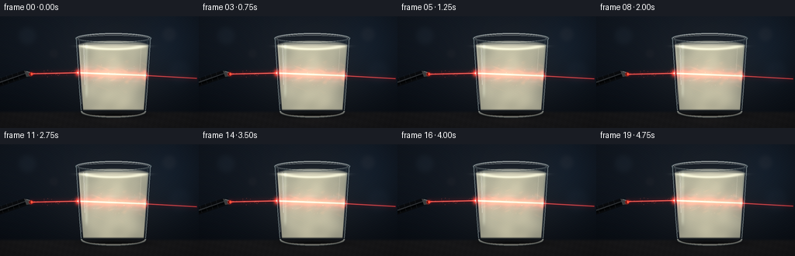
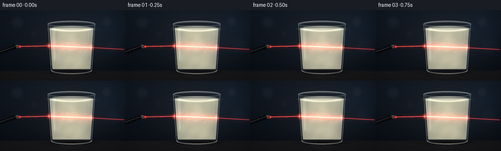

CODING AGENTS AS PIXEL WORLD MODELS
traex/GPT-5.6-Sol · phygen_046
点击播放 · 原生 RGB 像素
逐轮保存的候选
回放视频、检查图与代码变化。
每份候选均可单独播放。实际图片检查记录在下方工具轨迹中。
候选 01播放与检查图
点击播放 · 原生 RGB 像素


展开代码变化
--- 上一保存版本
+++ 本次保存版本
@@ -0,0 +1,274 @@
+from pathlib import Path
+import math
+import numpy as np
+from PIL import Image, ImageDraw, ImageFilter
+import artifact_io
+
+# Procedural text-to-video illustration. Everything is rendered at 3x resolution,
+# then filtered to the requested output size to retain sub-pixel glass and beam detail.
+W, H, N = 256, 144, 20
+S = 3
+WW, HH = W*S, H*S
+Y, X = np.mgrid[0:HH, 0:WW].astype(np.float32)
+X /= S
+Y /= S
+rng = np.random.default_rng(4601)
+
+
+def smoothstep(a, b, v):
+ q = np.clip((v-a)/(b-a), 0.0, 1.0)
+ return q*q*(3.0-2.0*q)
+
+
+def over(img, color, alpha):
+ """Alpha-over a constant RGB color onto float image."""
+ a = np.clip(alpha, 0, 1)[..., None]
+ img[:] = img*(1-a) + np.asarray(color, np.float32)*a
+
+
+def add(img, color, strength):
+ img[:] += np.asarray(color, np.float32) * np.clip(strength, 0, None)[..., None]
+
+
+def ellipse_sdf(cx, cy, rx, ry):
+ return np.sqrt(((X-cx)/rx)**2 + ((Y-cy)/ry)**2)
+
+
+def line_distance(x1, y1, x2, y2):
+ vx, vy = x2-x1, y2-y1
+ u = np.clip(((X-x1)*vx + (Y-y1)*vy)/(vx*vx+vy*vy), 0, 1)
+ return np.hypot(X-(x1+u*vx), Y-(y1+u*vy)), u
+
+
+def rgba_layer(img, painter, blur=0):
+ layer = Image.new('RGBA', (WW, HH), (0,0,0,0))
+ d = ImageDraw.Draw(layer)
+ painter(d)
+ if blur:
+ layer = layer.filter(ImageFilter.GaussianBlur(blur*S))
+ base = Image.fromarray(np.uint8(np.clip(img,0,255)), 'RGB').convert('RGBA')
+ base.alpha_composite(layer)
+ return np.asarray(base.convert('RGB'), dtype=np.float32)
+
+# Fixed dust motes and optical scattering centers inside the glass.
+mote_x = rng.uniform(103, 187, 105)
+mote_y = rng.uniform(42, 114, 105)
+mote_r = rng.uniform(.16, .52, 105)
+mote_a = rng.uniform(.12, .55, 105)
+# Sparse room dust illuminated by the incoming beam.
+air_x = rng.uniform(43, 98, 24)
+air_off = rng.normal(0, 1.8, 24)
+air_a = rng.uniform(.15, .60, 24)
+
+
+def render(k):
+ phase = k / (N-1)
+ # Deep slate studio background with a subtle warm pool behind the glass.
+ yy = Y/H
+ img = np.zeros((HH,WW,3), np.float32)
+ img[...,0] = 9 + 12*(1-yy)
+ img[...,1] = 14 + 15*(1-yy)
+ img[...,2] = 21 + 19*(1-yy)
+ warm = np.exp(-(((X-148)/96)**2 + ((Y-67)/77)**2)*1.6)
+ img += warm[...,None]*np.array([14,12,9], np.float32)
+ cool = np.exp(-(((X-221)/52)**2 + ((Y-35)/66)**2)*1.7)
+ img += cool[...,None]*np.array([1,6,11], np.float32)
+
+ # Defocused lights in the dark room, deliberately subdued.
+ for cx,cy,r,col,a in [
+ (35,25,14,(42,53,61),.16), (218,23,11,(55,44,36),.17),
+ (232,72,18,(30,43,52),.12), (69,48,7,(55,40,35),.10)]:
+ disk = np.exp(-(ellipse_sdf(cx,cy,r,r)**4)*2.1)*a
+ add(img, col, disk)
+
+ # Matte tabletop and soft contact/reflection shadows.
+ table = smoothstep(120.5,126.0,Y)
+ table_col = np.empty_like(img)
+ grain = (np.sin(X*.91+Y*.23)+np.sin(X*.17-Y*.71))*0.75
+ table_col[...,0] = 25 + 10*(1-yy) + grain
+ table_col[...,1] = 25 + 9*(1-yy) + grain
+ table_col[...,2] = 27 + 8*(1-yy) + grain
+ img = img*(1-table[...,None]) + table_col*table[...,None]
+ shadow = np.exp(-(((X-146)/55)**2 + ((Y-127)/5.7)**2)*2.0)
+ over(img, (3,4,5), shadow*.72)
+ reflection = np.exp(-(((X-147)/30)**2 + ((Y-132)/10)**2)*2.0)
+ add(img, (12,9,7), reflection*.38)
+
+ # Laser's sub-pixel vertical motion is coherent and restrained.
+ beam_shift = 0.52*math.sin(phase*math.pi*1.55 - .35)
+ pulse = .96 + .04*math.sin(phase*math.pi*3.0)
+ yin, yentry, yexit = 74.15+beam_shift, 72.8+beam_shift, 76.2+beam_shift
+
+ # Incoming beam in the room: core, colored diffraction fringe, and dusty halo.
+ dleft, ul = line_distance(39,yin,101,yentry)
+ left_zone = (X>=38)&(X<=102)
+ add(img, (96,1,2), np.exp(-(dleft/4.0)**2)*.30*pulse*left_zone)
+ add(img, (245,9,10), np.exp(-(dleft/.82)**2)*.86*pulse*left_zone)
+ add(img, (255,154,112), np.exp(-(dleft/.22)**2)*1.25*pulse*left_zone)
+ # Individually lit particles make the beam read as light in air.
+ for px,off,aa in zip(air_x,air_off,air_a):
+ py = yin + (yentry-yin)*(px-39)/62 + off
+ g = np.exp(-(((X-px)/.55)**2+((Y-py)/.55)**2)*2.0)
+ add(img, (255,83,58), g*aa)
+
+ # Outgoing refracted ray is dimmer and slightly steeper.
+ dright, ur = line_distance(185,yexit,253,80.0+beam_shift)
+ right_zone = (X>=184)&(X<=254)
+ add(img, (100,1,4), np.exp(-(dright/4.2)**2)*.19*pulse*right_zone)
+ add(img, (237,7,12), np.exp(-(dright/.72)**2)*.67*pulse*right_zone)
+ add(img, (255,121,89), np.exp(-(dright/.20)**2)*1.05*pulse*right_zone)
+
+ # Tapered tumbler geometry, with a heavy rounded base.
+ yc = np.clip((Y-29)/96,0,1)
+ half = 48.5 - 6.8*yc
+ glass_body = (smoothstep(0,1.15, half-np.abs(X-146)) *
+ smoothstep(27.5,29.0,Y) * smoothstep(127.0,124.7,Y))
+ # Ambient transparent glass slightly cools and magnifies the background.
+ over(img, (72,85,88), glass_body*.055)
+
+ # Opaque whole milk body, subtly warm with dense microscopic clouding.
+ milk_side = smoothstep(0,1.2,(half-2.4)-np.abs(X-146))
+ milk_vert = smoothstep(35.1,39.0,Y)*smoothstep(121.8,119.0,Y)
+ milk = milk_side*milk_vert
+ # A multi-frequency, slowly evolving fluid field.
+ p = phase*1.35
+ n1 = np.sin(X*.112 + np.sin(Y*.075+p)*2.3 - p*.6)
+ n2 = np.sin(Y*.185 - X*.037 + p*1.4)
+ n3 = np.sin(X*.255 + Y*.121 + np.sin(Y*.045-p)*2.0 - p*2.1)
+ n4 = np.sin(np.hypot(X-133,Y-78)*.31 - p*1.7)
+ cloudy = (n1*.40+n2*.27+n3*.19+n4*.14)
+ base = np.empty_like(img)
+ base[...,0] = 211 + 11*cloudy - (Y-38)*.035
+ base[...,1] = 207 + 10*cloudy - (Y-38)*.045
+ base[...,2] = 178 + 8*cloudy - (Y-38)*.045
+ # Side falloff suggests curved volume rather than a flat cream rectangle.
+ curve = np.clip(np.abs(X-146)/(half-2.2),0,1)
+ base[...,0] -= 38*curve**2
+ base[...,1] -= 34*curve**2
+ base[...,2] -= 25*curve**2
+ a = (milk*.94)[...,None]
+ img = img*(1-a)+base*a
+
+ # Milk's visible elliptical surface and its far/near rim separation.
+ surf = np.exp(-((ellipse_sdf(146,37.1,45.8,6.3)-.82)/.23)**2)
+ surf_fill = np.clip(1-ellipse_sdf(146,37.2,45.4,6.0),0,1)**.28
+ over(img, (229,226,202), surf_fill*.76)
+ add(img, (44,48,42), surf*(Y<37.3)*.16)
+ add(img, (248,246,222), surf*(Y>=37.1)*.22)
+
+ # The beam traversing milk: narrow ballistic core inside a broad Tyndall halo.
+ dinside, ui = line_distance(99.2,yentry,188.3,yexit)
+ inside_zone = (X>=98)&(X<=189)&(milk>.02)
+ attenuation = (1.0-.29*np.clip((X-99)/90,0,1))*pulse
+ # Thick warm red scattering volume, modulated by animated milk swirls.
+ scatter_mod = .84 + .16*np.sin(X*.39 + Y*.24 + n1*1.7 - p*1.8)
+ add(img, (75,2,2), np.exp(-(dinside/14.0)**2)*.25*attenuation*scatter_mod*inside_zone)
+ add(img, (151,8,8), np.exp(-(dinside/7.0)**2)*.44*attenuation*scatter_mod*inside_zone)
+ add(img, (255,26,18), np.exp(-(dinside/2.7)**2)*.50*attenuation*inside_zone)
+ add(img, (255,148,94), np.exp(-(dinside/.78)**2)*.95*attenuation*inside_zone)
+ add(img, (255,237,192), np.exp(-(dinside/.24)**2)*1.15*attenuation*inside_zone)
+
+ # Fine caustic threads and ripples around the beam path. These are limited to
+ # the illuminated volume, giving the requested intricate internal patterns.
+ halo = np.exp(-(dinside/17.0)**2)*inside_zone
+ field = np.sin(X*.30 + np.sin(Y*.24-p)*3.0 + p*1.3) + .55*np.sin(Y*.47-X*.08-p*2.0)
+ threads = np.clip((field-1.05)*2.0,0,1)*halo
+ add(img, (71,24,9), threads*.24)
+ # A faint complementary blue fringe comes from refraction at curved glass.
+ fringe = np.exp(-((dinside-8.2)/1.3)**2)*(.5+.5*np.sin(X*.22+Y*.31-p))*inside_zone
+ add(img, (10,27,35), fringe*.18)
+
+ # Scattering centers drift slowly with convection, glowing only near the ray.
+ for j,(mx,my,mr,ma) in enumerate(zip(mote_x,mote_y,mote_r,mote_a)):
+ dx = .8*math.sin(phase*1.8 + my*.13 + j*.11)
+ dy = 1.3*math.sin(phase*1.1 + mx*.09 + j*.31)
+ px, py = mx+dx, my+dy
+ # Approximate distance to the beam at this x.
+ by = yentry + (yexit-yentry)*np.clip((px-99.2)/89.1,0,1)
+ lit = math.exp(-((py-by)/12.0)**2)
+ if lit < .03: continue
+ g = np.exp(-(((X-px)/(mr+.11))**2+((Y-py)/(mr+.11))**2)*1.45)
+ if j%7==0:
+ add(img, (255,215,148), g*ma*lit*.88)
+ else:
+ add(img, (255,105,69), g*ma*lit*.57)
+
+ # Brilliant entry/exit scattering spots on the two curved walls.
+ for sx,sy,power in [(100.1,yentry,.95),(187.2,yexit,.72)]:
+ radial = np.exp(-(((X-sx)/3.7)**2+((Y-sy)/5.2)**2)*1.3)
+ core = np.exp(-(((X-sx)/.76)**2+((Y-sy)/1.35)**2)*1.8)
+ add(img, (255,48,31), radial*power)
+ add(img, (255,231,192), core*power*1.35)
+
+ # Glass outlines, rim highlights, specular streaks, and thick foot are painted
+ # above the liquid so the vessel remains unmistakably transparent glass.
+ def glass_lines(d):
+ sc=S
+ def pts(seq): return [(int(x*sc),int(y*sc)) for x,y in seq]
+ # Outer and inner rims.
+ d.ellipse((97*sc,21.5*sc,195*sc,35*sc), outline=(188,211,214,108), width=1*sc)
+ d.ellipse((100*sc,24*sc,192*sc,33.5*sc), outline=(239,250,244,91), width=1*sc)
+ d.arc((98*sc,22*sc,194*sc,35*sc), 188,350, fill=(252,255,248,170), width=1*sc)
+ d.arc((98*sc,22*sc,194*sc,35*sc), 8,172, fill=(65,82,88,115), width=1*sc)
+ # Curved sides.
+ d.line(pts([(98.2,28.1),(100.4,64),(102.4,96),(104.5,121)]), fill=(205,226,227,125), width=sc)
+ d.line(pts([(193.8,28.1),(191.5,64),(189.6,96),(187.6,121)]), fill=(215,232,231,121), width=sc)
+ d.line(pts([(102.0,31),(104.0,65),(105.2,113)]), fill=(255,255,246,57), width=sc)
+ d.line(pts([(190.0,31),(188.1,66),(187.0,111)]), fill=(91,116,123,69), width=sc)
+ # Vertical glints; asymmetric to sell cylindrical curvature.
+ d.line(pts([(107.4,36),(108.0,54),(109.0,88)]), fill=(255,255,244,95), width=sc)
+ d.line(pts([(108.9,42),(109.8,69)]), fill=(255,255,255,119), width=max(1,sc//2))
+ d.line(pts([(181.8,40),(180.3,70)]), fill=(255,248,223,45), width=sc)
+ # Heavy rounded base.
+ d.arc((104*sc,113*sc,188*sc,131*sc), 0,180, fill=(246,250,237,126), width=2*sc)
+ d.arc((104*sc,116*sc,188*sc,131*sc), 3,177, fill=(69,85,87,105), width=sc)
+ d.arc((105*sc,119*sc,187*sc,129*sc), 4,176, fill=(255,254,232,91), width=sc)
+ img = rgba_layer(img, glass_lines)
+
+ # Diffuse broad glass reflection, kept semi-transparent.
+ glint = np.exp(-((X-111.2)/2.0)**2)*smoothstep(30,38,Y)*smoothstep(108,98,Y)*glass_body
+ add(img, (82,91,86), glint*.25)
+
+ # Laser pointer in the near foreground, metallic black with a red tip.
+ def pointer(d):
+ sc=S
+ # Axis from offscreen lower left toward the glass.
+ poly=[(-12,84),(31,69.8),(39,72.0),(40,77.1),(-7,93.2)]
+ d.polygon([(int(x*sc),int(y*sc)) for x,y in poly], fill=(10,12,15,255))
+ d.line([(-9*sc,88*sc),(34*sc,73.5*sc)], fill=(55,59,63,255), width=2*sc)
+ d.line([(-8*sc,90*sc),(34*sc,75.3*sc)], fill=(2,3,4,230), width=3*sc)
+ # Grip grooves.
+ for q in [2,9,16,23]:
+ x=q; yc2=87.2-.33*(q+8)
+ d.line([(int((x-1)*sc),int((yc2-5.3)*sc)),(int((x+2)*sc),int((yc2+4.7)*sc))], fill=(75,77,78,120), width=max(1,sc//2))
+ # Silver/red emitter collar and luminous aperture.
+ d.polygon([(31*sc,70*sc),(38*sc,71.8*sc),(40*sc,77*sc),(34*sc,78.2*sc)], fill=(65,67,68,255))
+ d.line([(34*sc,71*sc),(39*sc,72.4*sc)], fill=(160,162,158,230), width=sc)
+ d.ellipse((37.0*sc,72.0*sc,42.2*sc,77.0*sc), fill=(47,8,9,255), outline=(157,42,37,255), width=sc)
+ d.ellipse((39.1*sc,73.1*sc,42.2*sc,75.8*sc), fill=(255,90,61,255))
+ img = rgba_layer(img, pointer)
+
+ # Optical bloom at the emitter aperture.
+ emitter = np.exp(-(((X-41)/2.4)**2+((Y-yin)/2.4)**2)*1.2)
+ add(img, (255,18,13), emitter*.50*pulse)
+
+ # Cinematic vignette and gentle sensor grain (fixed pattern avoids flicker).
+ vign = np.clip(((X-W/2)/(W*.70))**2 + ((Y-H/2)/(H*.73))**2,0,1)
+ img *= (1-.31*vign[...,None])
+ fixed_grain = (np.sin(X*3.11+Y*1.71)+np.sin(X*1.07-Y*2.63))*.55
+ img += fixed_grain[...,None]
+
+ # Downsample to exact required RGB dimensions.
+ out = Image.fromarray(np.uint8(np.clip(img,0,255)), 'RGB')
+ out = out.resize((W,H), Image.Resampling.LANCZOS)
+ return np.asarray(out, dtype=np.uint8)
+
+
+def main():
+ frames = np.stack([render(i) for i in range(N)], axis=0)
+ assert frames.shape == (20,144,256,3) and frames.dtype == np.uint8
+ artifact_io.save(frames, Path(__file__).resolve().parent)
+
+
+if __name__ == '__main__':
+ main()
可观测工具轨迹
实际执行的命令与返回图片。
命令 1exit 0
/bin/bash -lc "cat prompt.txt && printf '\\n--- GENERATION_RULES ---\\n' && cat GENERATION_RULES.md"
命令 2exit 0
/bin/bash -lc "cat task_spec.json && printf '\\n--- FILES ---\\n' && find . -maxdepth 2 -type f -printf '%p\\n' | sort"
命令 3exit 0
/bin/bash -lc "command -v ffmpeg; command -v python3; command -v blender; command -v convert; python3 - <<'PY' mods=['numpy','PIL','cv2','cairo','moderngl','moviepy'] for m in mods: try: x=__import__(m); print(m,'OK',getattr(x,'__version__','')) except Exception as e: print(m,'NO',str(e)[:100]) PY"
命令 4exit 0
/bin/bash -lc 'cat artifact_io.py'
命令 5exit 0
/bin/bash -lc "cat > generate.py <<'PY'
from pathlib import Path
import math
import numpy as np
from PIL import Image, ImageDraw, ImageFilter
import artifact_io
# Procedural text-to-video illustration. Everything is rendered at 3x resolution,
# then filtered to the requested output size to retain sub-pixel glass and beam detail.
W, H, N = 256, 144, 20
S = 3
WW, HH = W*S, H*S
Y, X = np.mgrid[0:HH, 0:WW].astype(np.float32)
X /= S
Y /= S
rng = np.random.default_rng(4601)
def smoothstep(a, b, v):
q = np.clip((v-a)/(b-a), 0.0, 1.0)
return q*q*(3.0-2.0*q)
def over(img, color, alpha):
\"\"\"Alpha-over a constant RGB color onto float image.\"\"\"
a = np.clip(alpha, 0, 1)[..., None]
img[:] = img*(1-a) + np.asarray(color, np.float32)*a
def add(img, color, strength):
img[:] += np.asarray(color, np.float32) * np.clip(strength, 0, None)[..., None]
def ellipse_sdf(cx, cy, rx, ry):
return np.sqrt(((X-cx)/rx)**2 + ((Y-cy)/ry)**2)
def line_distance(x1, y1, x2, y2):
vx, vy = x2-x1, y2-y1
u = np.clip(((X-x1)*vx + (Y-y1)*vy)/(vx*vx+vy*vy), 0, 1)
return np.hypot(X-(x1+u*vx), Y-(y1+u*vy)), u
def rgba_layer(img, painter, blur=0):
layer = Image.new('RGBA', (WW, HH), (0,0,0,0))
d = ImageDraw.Draw(layer)
painter(d)
if blur:
layer = layer.filter(ImageFilter.GaussianBlur(blur*S))
base = Image.fromarray(np.uint8(np.clip(img,0,255)), 'RGB').convert('RGBA')
base.alpha_composite(layer)
return np.asarray(base.convert('RGB'), dtype=np.float32)
# Fixed dust motes and optical scattering centers inside the glass.
mote_x = rng.uniform(103, 187, 105)
mote_y = rng.uniform(42, 114, 105)
mote_r = rng.uniform(.16, .52, 105)
mote_a = rng.uniform(.12, .55, 105)
# Sparse room dust illuminated by the incoming beam.
air_x = rng.uniform(43, 98, 24)
air_off = rng.normal(0, 1.8, 24)
air_a = rng.uniform(.15, .60, 24)
def render(k):
phase = k / (N-1)
# Deep slate studio background with a subtle warm pool behind the glass.
yy = Y/H
img = np.zeros((HH,WW,3), np.float32)
img[...,0] = 9 + 12*(1-yy)
img[...,1] = 14 + 15*(1-yy)
img[...,2] = 21 + 19*(1-yy)
warm = np.exp(-(((X-148)/96)**2 + ((Y-67)/77)**2)*1.6)
img += warm[...,None]*np.array([14,12,9], np.float32)
cool = np.exp(-(((X-221)/52)**2 + ((Y-35)/66)**2)*1.7)
img += cool[...,None]*np.array([1,6,11], np.float32)
# Defocused lights in the dark room, deliberately subdued.
for cx,cy,r,col,a in [
(35,25,14,(42,53,61),.16), (218,23,11,(55,44,36),.17),
(232,72,18,(30,43,52),.12), (69,48,7,(55,40,35),.10)]:
disk = np.exp(-(ellipse_sdf(cx,cy,r,r)**4)*2.1)*a
add(img, col, disk)
# Matte tabletop and soft contact/reflection shadows.
table = smoothstep(120.5,126.0,Y)
table_col = np.empty_like(img)
grain = (np.sin(X*.91+Y*.23)+np.sin(X*.17-Y*.71))*0.75
table_col[...,0] = 25 + 10*(1-yy) + grain
table_col[...,1] = 25 + 9*(1-yy) + grain
table_col[...,2] = 27 + 8*(1-yy) + grain
img = img*(1-table[...,None]) + table_col*table[...,None]
shadow = np.exp(-(((X-146)/55)**2 + ((Y-127)/5.7)**2)*2.0)
over(img, (3,4,5), shadow*.72)
reflection = np.exp(-(((X-147)/30)**2 + ((Y-132)/10)**2)*2.0)
add(img, (12,9,7), reflection*.38)
# Laser's sub-pixel vertical motion is coherent and restrained.
beam_shift = 0.52*math.sin(phase*math.pi*1.55 - .35)
pulse = .96 + .04*math.sin(phase*math.pi*3.0)
yin, yentry, yexit = 74.15+beam_shift, 72.8+beam_shift, 76.2+beam_shift
# Incoming beam in the room: core, colored diffraction fringe, and dusty halo.
dleft, ul = line_distance(39,yin,101,yentry)
left_zone = (X>=38)&(X<=102)
add(img, (96,1,2), np.exp(-(dleft/4.0)**2)*.30*pulse*left_zone)
add(img, (245,9,10), np.exp(-(dleft/.82)**2)*.86*pulse*left_zone)
add(img, (255,154,112), np.exp(-(dleft/.22)**2)*1.25*pulse*left_zone)
# Individually lit particles make the beam read as light in air.
for px,off,aa in zip(air_x,air_off,air_a):
py = yin + (yentry-yin)*(px-39)/62 + off
g = np.exp(-(((X-px)/.55)**2+((Y-py)/.55)**2)*2.0)
add(img, (255,83,58), g*aa)
# Outgoing refracted ray is dimmer and slightly steeper.
dright, ur = line_distance(185,yexit,253,80.0+beam_shift)
right_zone = (X>=184)&(X<=254)
add(img, (100,1,4), np.exp(-(dright/4.2)**2)*.19*pulse*right_zone)
add(img, (237,7,12), np.exp(-(dright/.72)**2)*.67*pulse*right_zone)
add(img, (255,121,89), np.exp(-(dright/.20)**2)*1.05*pulse*right_zone)
# Tapered tumbler geometry, with a heavy rounded base.
yc = np.clip((Y-29)/96,0,1)
half = 48.5 - 6.8*yc
glass_body = (smoothstep(0,1.15, half-np.abs(X-146)) *
smoothstep(27.5,29.0,Y) * smoothstep(127.0,124.7,Y))
# Ambient transparent glass slightly cools and magnifies the background.
over(img, (72,85,88), glass_body*.055)
# Opaque whole milk body, subtly warm with dense microscopic clouding.
milk_side = smoothstep(0,1.2,(half-2.4)-np.abs(X-146))
milk_vert = smoothstep(35.1,39.0,Y)*smoothstep(121.8,119.0,Y)
milk = milk_side*milk_vert
# A multi-frequency, slowly evolving fluid field.
p = phase*1.35
n1 = np.sin(X*.112 + np.sin(Y*.075+p)*2.3 - p*.6)
n2 = np.sin(Y*.185 - X*.037 + p*1.4)
n3 = np.sin(X*.255 + Y*.121 + np.sin(Y*.045-p)*2.0 - p*2.1)
n4 = np.sin(np.hypot(X-133,Y-78)*.31 - p*1.7)
cloudy = (n1*.40+n2*.27+n3*.19+n4*.14)
base = np.empty_like(img)
base[...,0] = 211 + 11*cloudy - (Y-38)*.035
base[...,1] = 207 + 10*cloudy - (Y-38)*.045
base[...,2] = 178 + 8*cloudy - (Y-38)*.045
# Side falloff suggests curved volume rather than a flat cream rectangle.
curve = np.clip(np.abs(X-146)/(half-2.2),0,1)
base[...,0] -= 38*curve**2
base[...,1] -= 34*curve**2
base[...,2] -= 25*curve**2
a = (milk*.94)[...,None]
img = img*(1-a)+base*a
# Milk's visible elliptical surface and its far/near rim separation.
surf = np.exp(-((ellipse_sdf(146,37.1,45.8,6.3)-.82)/.23)**2)
surf_fill = np.clip(1-ellipse_sdf(146,37.2,45.4,6.0),0,1)**.28
over(img, (229,226,202), surf_fill*.76)
add(img, (44,48,42), surf*(Y<37.3)*.16)
add(img, (248,246,222), surf*(Y>=37.1)*.22)
# The beam traversing milk: narrow ballistic core inside a broad Tyndall halo.
dinside, ui = line_distance(99.2,yentry,188.3,yexit)
inside_zone = (X>=98)&(X<=189)&(milk>.02)
attenuation = (1.0-.29*np.clip((X-99)/90,0,1))*pulse
# Thick warm red scattering volume, modulated by animated milk swirls.
scatter_mod = .84 + .16*np.sin(X*.39 + Y*.24 + n1*1.7 - p*1.8)
add(img, (75,2,2), np.exp(-(dinside/14.0)**2)*.25*attenuation*scatter_mod*inside_zone)
add(img, (151,8,8), np.exp(-(dinside/7.0)**2)*.44*attenuation*scatter_mod*inside_zone)
add(img, (255,26,18), np.exp(-(dinside/2.7)**2)*.50*attenuation*inside_zone)
add(img, (255,148,94), np.exp(-(dinside/.78)**2)*.95*attenuation*inside_zone)
add(img, (255,237,192), np.exp(-(dinside/.24)**2)*1.15*attenuation*inside_zone)
# Fine caustic threads and ripples around the beam path. These are limited to
# the illuminated volume, giving the requested intricate internal patterns.
halo = np.exp(-(dinside/17.0)**2)*inside_zone
field = np.sin(X*.30 + np.sin(Y*.24-p)*3.0 + p*1.3) + .55*np.sin(Y*.47-X*.08-p*2.0)
threads = np.clip((field-1.05)*2.0,0,1)*halo
add(img, (71,24,9), threads*.24)
# A faint complementary blue fringe comes from refraction at curved glass.
fringe = np.exp(-((dinside-8.2)/1.3)**2)*(.5+.5*np.sin(X*.22+Y*.31-p))*inside_zone
add(img, (10,27,35), fringe*.18)
# Scattering centers drift slowly with convection, glowing only near the ray.
for j,(mx,my,mr,ma) in enumerate(zip(mote_x,mote_y,mote_r,mote_a)):
dx = .8*math.sin(phase*1.8 + my*.13 + j*.11)
dy = 1.3*math.sin(phase*1.1 + mx*.09 + j*.31)
px, py = mx+dx, my+dy
# Approximate distance to the beam at this x.
by = yentry + (yexit-yentry)*np.clip((px-99.2)/89.1,0,1)
lit = math.exp(-((py-by)/12.0)**2)
if lit < .03: continue
g = np.exp(-(((X-px)/(mr+.11))**2+((Y-py)/(mr+.11))**2)*1.45)
if j%7==0:
add(img, (255,215,148), g*ma*lit*.88)
else:
add(img, (255,105,69), g*ma*lit*.57)
# Brilliant entry/exit scattering spots on the two curved walls.
for sx,sy,power in [(100.1,yentry,.95),(187.2,yexit,.72)]:
radial = np.exp(-(((X-sx)/3.7)**2+((Y-sy)/5.2)**2)*1.3)
core = np.exp(-(((X-sx)/.76)**2+((Y-sy)/1.35)**2)*1.8)
add(img, (255,48,31), radial*power)
add(img, (255,231,192), core*power*1.35)
# Glass outlines, rim highlights, specular streaks, and thick foot are painted
# above the liquid so the vessel remains unmistakably transparent glass.
def glass_lines(d):
sc=S
def pts(seq): return [(int(x*sc),int(y*sc)) for x,y in seq]
# Outer and inner rims.
d.ellipse((97*sc,21.5*sc,195*sc,35*sc), outline=(188,211,214,108), width=1*sc)
d.ellipse((100*sc,24*sc,192*sc,33.5*sc), outline=(239,250,244,91), width=1*sc)
d.arc((98*sc,22*sc,194*sc,35*sc), 188,350, fill=(252,255,248,170), width=1*sc)
d.arc((98*sc,22*sc,194*sc,35*sc), 8,172, fill=(65,82,88,115), width=1*sc)
# Curved sides.
d.line(pts([(98.2,28.1),(100.4,64),(102.4,96),(104.5,121)]), fill=(205,226,227,125), width=sc)
d.line(pts([(193.8,28.1),(191.5,64),(189.6,96),(187.6,121)]), fill=(215,232,231,121), width=sc)
d.line(pts([(102.0,31),(104.0,65),(105.2,113)]), fill=(255,255,246,57), width=sc)
d.line(pts([(190.0,31),(188.1,66),(187.0,111)]), fill=(91,116,123,69), width=sc)
# Vertical glints; asymmetric to sell cylindrical curvature.
d.line(pts([(107.4,36),(108.0,54),(109.0,88)]), fill=(255,255,244,95), width=sc)
d.line(pts([(108.9,42),(109.8,69)]), fill=(255,255,255,119), width=max(1,sc//2))
d.line(pts([(181.8,40),(180.3,70)]), fill=(255,248,223,45), width=sc)
# Heavy rounded base.
d.arc((104*sc,113*sc,188*sc,131*sc), 0,180, fill=(246,250,237,126), width=2*sc)
d.arc((104*sc,116*sc,188*sc,131*sc), 3,177, fill=(69,85,87,105), width=sc)
d.arc((105*sc,119*sc,187*sc,129*sc), 4,176, fill=(255,254,232,91), width=sc)
img = rgba_layer(img, glass_lines)
# Diffuse broad glass reflection, kept semi-transparent.
glint = np.exp(-((X-111.2)/2.0)**2)*smoothstep(30,38,Y)*smoothstep(108,98,Y)*glass_body
add(img, (82,91,86), glint*.25)
# Laser pointer in the near foreground, metallic black with a red tip.
def pointer(d):
sc=S
# Axis from offscreen lower left toward the glass.
poly=[(-12,84),(31,69.8),(39,72.0),(40,77.1),(-7,93.2)]
d.polygon([(int(x*sc),int(y*sc)) for x,y in poly], fill=(10,12,15,255))
d.line([(-9*sc,88*sc),(34*sc,73.5*sc)], fill=(55,59,63,255), width=2*sc)
d.line([(-8*sc,90*sc),(34*sc,75.3*sc)], fill=(2,3,4,230), width=3*sc)
# Grip grooves.
for q in [2,9,16,23]:
x=q; yc2=87.2-.33*(q+8)
d.line([(int((x-1)*sc),int((yc2-5.3)*sc)),(int((x+2)*sc),int((yc2+4.7)*sc))], fill=(75,77,78,120), width=max(1,sc//2))
# Silver/red emitter collar and luminous aperture.
d.polygon([(31*sc,70*sc),(38*sc,71.8*sc),(40*sc,77*sc),(34*sc,78.2*sc)], fill=(65,67,68,255))
d.line([(34*sc,71*sc),(39*sc,72.4*sc)], fill=(160,162,158,230), width=sc)
d.ellipse((37.0*sc,72.0*sc,42.2*sc,77.0*sc), fill=(47,8,9,255), outline=(157,42,37,255), width=sc)
d.ellipse((39.1*sc,73.1*sc,42.2*sc,75.8*sc), fill=(255,90,61,255))
img = rgba_layer(img, pointer)
# Optical bloom at the emitter aperture.
emitter = np.exp(-(((X-41)/2.4)**2+((Y-yin)/2.4)**2)*1.2)
add(img, (255,18,13), emitter*.50*pulse)
# Cinematic vignette and gentle sensor grain (fixed pattern avoids flicker).
vign = np.clip(((X-W/2)/(W*.70))**2 + ((Y-H/2)/(H*.73))**2,0,1)
img *= (1-.31*vign[...,None])
fixed_grain = (np.sin(X*3.11+Y*1.71)+np.sin(X*1.07-Y*2.63))*.55
img += fixed_grain[...,None]
# Downsample to exact required RGB dimensions.
out = Image.fromarray(np.uint8(np.clip(img,0,255)), 'RGB')
out = out.resize((W,H), Image.Resampling.LANCZOS)
return np.asarray(out, dtype=np.uint8)
def main():
frames = np.stack([render(i) for i in range(N)], axis=0)
assert frames.shape == (20,144,256,3) and frames.dtype == np.uint8
artifact_io.save(frames, Path(__file__).resolve().parent)
if __name__ == '__main__':
main()
PY
python3 generate.py
python3 - <<'PY'
import numpy as np
from PIL import Image
p=np.load('pixels.npz')['pixels']
print('pixels',p.shape,p.dtype,'size',__import__('os').path.getsize('pixels.npz'))
a=np.stack([np.asarray(Image.open(f'frames/{i:02d}.png')) for i in range(20)])
print('frames',a.shape,a.dtype,'range',a.min(),a.max(),'mean',a.mean().round(2))
print('mean abs consecutive deltas',np.abs(np.diff(a.astype(float),axis=0)).mean(axis=(1,2,3)).round(3))
print('outputs:',[(x,__import__('os').path.getsize(x)) for x in ['inspection.png','transition_check.png','index.html']])
PY"命令 6exit 0
/bin/bash -lc "python3 - <<'PY'
import numpy as np
from PIL import Image
A=np.stack([np.array(Image.open(f'frames/{i:02d}.png')).astype(float) for i in range(20)])
regions={'milk':(slice(35,122),slice(100,193)),'inside_beam':(slice(64,86),slice(98,190)),'incoming':(slice(67,81),slice(38,100)),'glass':(slice(20,130),slice(96,196))}
for n,(ys,xs) in regions.items():
r=A[:,ys,xs]
print(n,'meanRGB',r.mean((0,1,2)).round(1),'maxRGB',r.max((0,1,2)),'first-last MAD',np.abs(r[-1]-r[0]).mean().round(3),'temporal std',r.std(0).mean().round(3))
# continuity and frame uniqueness
print('frame hashes unique',len(set(__import__('hashlib').sha256(x.astype('uint8').tobytes()).hexdigest() for x in A)))
print('frame0-19 MAD',np.abs(A[19]-A[0]).mean().round(3),'maxdelta',np.abs(A[19]-A[0]).max())
PY"命令 7exit 0
/bin/bash -lc 'python3 -m py_compile generate.py artifact_io.py && git status --short 2>/dev/null || true && ls -lh generate.py pixels.npz frames/00.png frames/19.png inspection.png index.html'
命令 8exit 0
/bin/bash -lc "python3 -m py_compile generate.py && python3 - <<'PY'
from pathlib import Path
import json, numpy as np
from PIL import Image
spec=json.loads(Path('task_spec.json').read_text())
a=np.stack([np.asarray(Image.open(f'frames/{i:02d}.png')) for i in range(spec['frames'])])
z=np.load('pixels.npz')['pixels']
packed=((a[...,0].astype(np.uint32)<<16)|(a[...,1].astype(np.uint32)<<8)|a[...,2].astype(np.uint32)).transpose(1,2,0)
assert a.shape==(20,144,256,3) and a.dtype==np.uint8
assert z.shape==(144,256,20) and np.array_equal(z,packed)
assert all(Path(x).exists() for x in ['generate.py','pixels.npz','index.html','inspection.png','transition_check.png'])
print('PASS: 20 RGB frames, 256x144, 4 fps metadata, packed artifact exact')
PY"保存候选 1 份；完成命令 8 次；可验证图片返回 0 张。原始 API 响应与完整日志保留在本地。